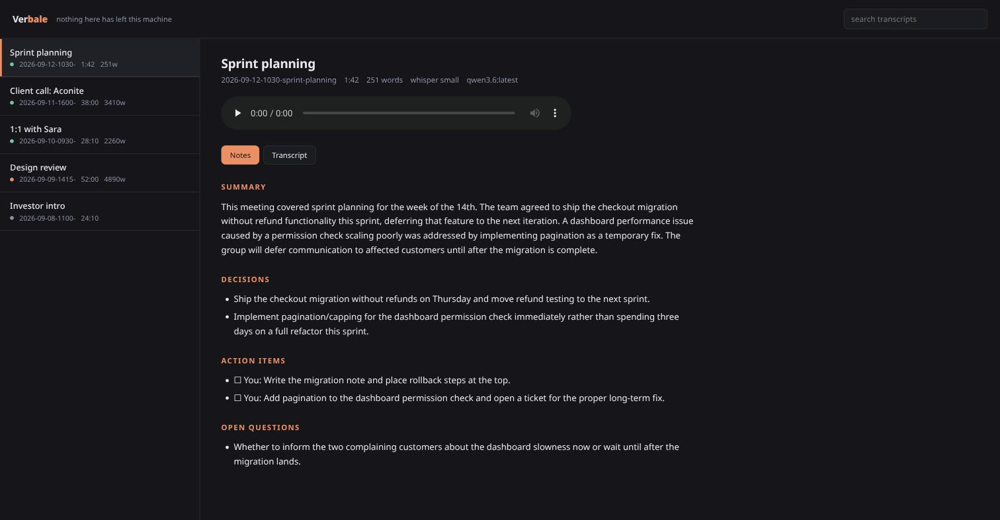
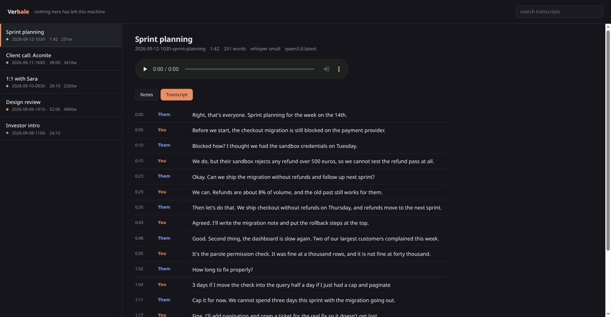
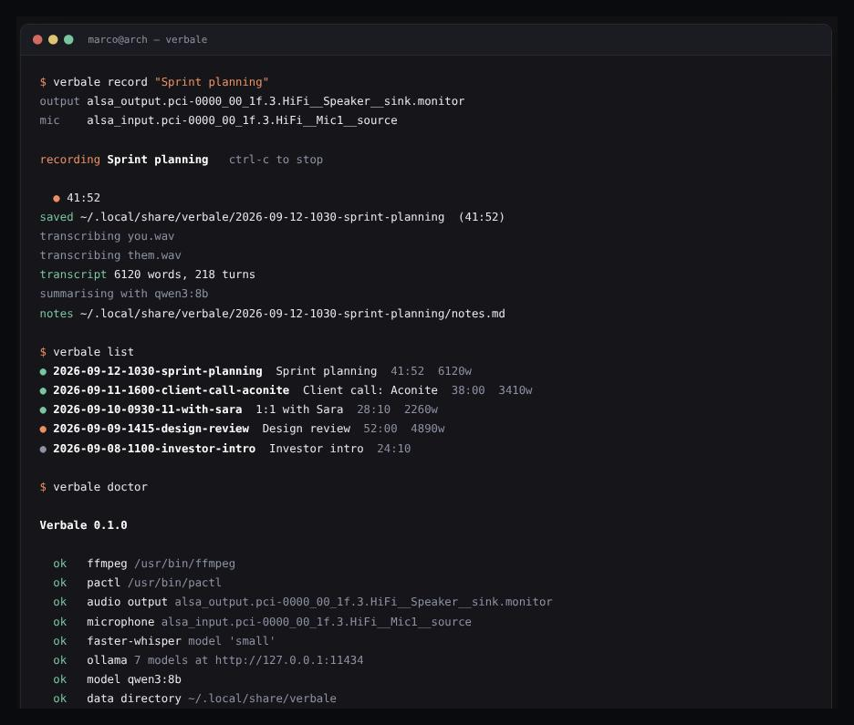

Verbale records the call, transcribes it with Whisper on your own CPU, and writes the minutes with a model already running on your laptop. No account, no API key, no upload. Turn off your wifi and it still works.
MIT licensed · Linux · pipx install git+https://github.com/MarcoZorn/verbale

This is the idea the whole thing is built on, and it is why the transcripts are readable instead of a wall of unattributed text.
Telling speakers apart usually means diarization: a second model that clusters voices by timbre, gets confused by cross-talk, and changes its mind about how many people are in the room.
Verbale does none of that. Every audio output on PipeWire exposes a
.monitor source carrying exactly what is being played, so Verbale
records two tracks at once: your microphone, and your speakers. Your voice
is only ever on one of them. Speaker attribution is not inferred, it is a
property of how the audio was captured.
Both tracks come from one ffmpeg process, so they start together. Two processes drift apart by however long the second took to launch, and a transcript whose speakers are half a second out of order reads like nonsense.
The honest limitation: Them is one label for everyone on the far end. For minutes, "me or them" is usually the distinction that matters, and being right about that beats guessing wrong about four voices.
Four commands cover almost everything.
Captures both tracks, then transcribes and summarises when you stop. One command from silence to minutes.
Every meeting you have recorded, and the notes for any of them, in the terminal.
A local page on loopback. Click a timestamp in the transcript and the recording jumps there.
Already have a recording? Point Verbale at any audio file and get the same treatment.

Any tool can claim to be private. This one is small enough that you can check.
summarize.py and takes two minutes to read.verbale pull. After that you can stay offline forever.Linux with PipeWire or PulseAudio, and ffmpeg.
# the tool pipx install git+https://github.com/MarcoZorn/verbale # fetch the whisper weights once, then check everything verbale pull verbale doctor # optional, for the summaries: any model you like ollama pull qwen3:8b # record a meeting. ctrl-c stops it. verbale record "Sprint planning" verbale show
Without Ollama you still get full transcripts; only the minutes are skipped.
Recording is Linux only, because the capture layer is PulseAudio and PipeWire.
verbale import works anywhere Python and ffmpeg do.

One directory per meeting. Nothing here needs Verbale to read it.
~/.local/share/verbale/2026-09-12-1030-sprint-planning/ ├── meeting.json what it is, how long, which models touched it ├── them.wav what your speakers played ├── you.wav what your microphone heard ├── transcript.json segments with timings and speakers ├── transcript.md the same thing, readable └── notes.md the minutes
A notes tool you cannot get your notes out of is a liability. This one is cat.